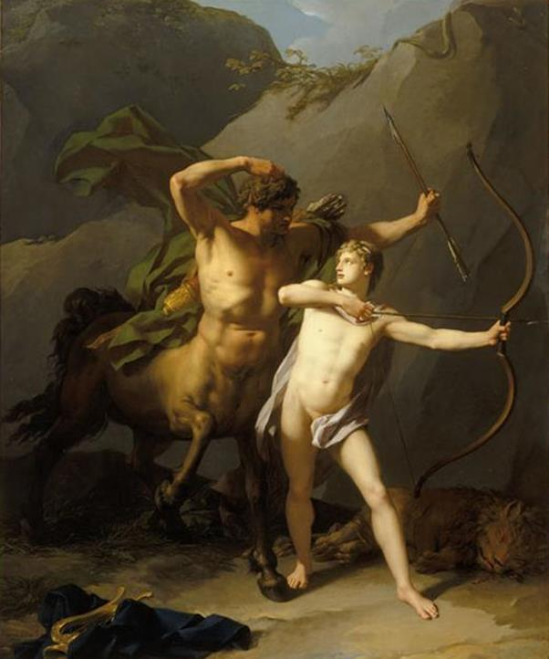

Chuyện bắt đầu từ cuộc tình duyên của Apollon với Coronis, một người thiếu nữ xinh đẹp con của nhà vua Phlégias.
Xưa kia ở xứ Béotie có một nhà vua tên là Phlégias sinh được một người con gái có sắc đẹp khác thường. Bữa kia, một buổi đẹp trời, nàng vào rừng chơi và, như thói quen, nàng đến tắm ở một hồ nước xanh ngắt êm ả có những cây miên liễu nghiêng mình soi bóng. Chính trong khung cảnh thơ mộng này, thần Apollon đã gặp nàng và đem lòng yêu mến. Cuộc tình duyên của họ hình như không được Phlégias biết, hay, như một số người kể, không được vua cha ưng thuận. Nhưng dù sao thì họ cũng đã yêu mến nhau rồi. Song Coronis đẹp người lại không đẹp nết. Nàng đã lừa dối Apollon. Trong lúc vắng Apollon nàng đã buông mình theo dục vọng xấu xa, hiến dâng tình yêu của mình cho một người khác, một người trần thế, một chàng trai tên là Ischys, con của nhà vua Élatos trị vì ở xứ Arcadie. Và như vậy, đối với vị thần Ánh sáng, vị thần của Chân lý, của sự Trung thực là một điều xúc phạm gớm ghê. Coronis mất tỉnh táo đến nỗi tin chắc rằng Apollon không thể nào biết được cuộc tình duyên ám muội của mình. Nhưng với vị thần của chân lý thì mọi việc sớm muốn cũng phải phơi bày ra trước ánh sáng. Một con quạ lông trắng như tuyết, vì loài chim này ngày xưa vốn như vậy, con vật yêu quý của Apollon, như con đại bàng của Zeus, con công của Héra, bay đến kể lại cho Apollon, mách cho Apollon biết câu chuyện đau đớn và xấu xa ấy. Apollon nổi giận, và như chúng ta đã từng biết, các vị thần khi đã nổi giận thì... chỉ có thể nói là không thể nào tưởng tượng được, nhất là một con người trung thực mà bị lừa dối như Apollon. Mất cả tỉnh táo, Apollon trút ngay nỗi căm tức, uất ức của mình vào con quạ. Chẳng rõ thần cầm cái gì ném vào con vật để đến nỗi toàn thân nó đen ngòm đi. Và cũng từ đó trở đi loài quạ mang bộ lông đen như cái tin nó đem đến để làm đen tối cả trái tim vị thần. Sau đó nỗi tức giận của Apollon giáng xuống người thiếu nữ không trung thực. Apollon bắn chết Coronis. Có người kể, không phải Apollon bắn mà cô em gái của thần, tức giận thay cho anh, đã trừng trị bằng những mũi tên vàng của mình.
Trị tội Coronis xong, hình như Apollon cũng cảm thấy có phần quá khắc nghiệt, tàn nhẫn. Thần cho làm lễ hỏa táng người con gái đó. Vào lúc lửa vừa bốc cháy thì Apollon nảy ra ý định cứu lấy đứa bé trong bụng Coronis: “Dù sao thì ta cũng phải cứu lấy đứa con ta vì đấy là giọt máu của ta...”, Apollon nghĩ thế và bằng tất cả tài năng siêu việt của một vị thần, Apollon đã lấy được đứa con sắp đến ngày ra đời từ thi hài Coronis. Cứu được đứa bé, Apollon đem trao cho vị thần Centaure Chiron, tức là vị thần nửa người nửa ngựa Chiron. Ở Hy Lạp xưa kia có khá nhiều Centaure nhưng danh tiếng lẫy lừng nhất là Centaure Chiron, một vị thần tuy về thân hình thì rất gớm ghiếc nhưng về trí tuệ thì lại uyên thâm và lòng thương người thì thật là hiếm có. Chiron chịu trách nhiệm dạy dỗ nuôi nấng chú bé Asclépios (thần thoại La Mã: Esculape). Centaure Chiron vốn là con của thần Cronos và tiên nữ Nymphe Philyra. Sở dĩ Chiron phải mang thân hình quái dị nửa người nửa ngựa là vì Cronos để tránh sự theo dõi của vợ mình là nàng Rhéa, đã biến mình thành ngựa mỗi khi đến tình tự ái ân với Philyra. Sinh ra Chiron, thấy mình có một đứa con quái đản như thế nên Philyra rất buồn rầu, chán nản. Chẳng nhẽ tự tử, nàng đành cầu khẩn các vị thần giải thoát cho nàng cảnh sống đau khổ của một người mẹ không còn niềm tin và há vọng. Các vị thần đã biến Philyra thành cây bồ đề (Tilleul).
Centaure Chiron khác hẳn những Centaure con của Ixion và Néphélé, vốn là loại hoang dã, tối tăm, ngu muội và thù địch với loài người. Được thần Apollon và Artémis truyền dạy cho nhiều điều hiểu biết quý báu, Chiron nổi danh trong trần thế là “vị Centaure thông tuệ nhất và hiền minh nhất”. Chiron ở trong một hang đá dưới chân núi Pélion xứ Thessalie, thường chữa bệnh cho mọi người và dạy học. Nhiều vị anh hùng xuất chúng của nước Hy Lạp đều là môn đệ của Chiron như: Achille, Ulysse, Diomède... Những người Argonautes (thủy thủ của con thuyền Argo) trước khi vượt biển sang phương Đông để đoạt Bộ lông Cừu vàng đã đến xin Chiron chỉ cho cách đi biển...
Có chuyện lại kể, Philyra để trốn tránh cuộc tình duyên với Cronos đã biến mình thành ngựa nhưng vẫn không thoát khỏi dục vọng của Cronos. Vì lẽ đó nàng mới đẻ ra Centaure Chiron. Nàng đã sống với đứa con nửa người nửa ngựa đó ở hang đá Pélion và cùng con dạy dỗ biết bao chàng trai ưu tú của đất nước Hy Lạp.

Centaure Chiron và học trò
Asclépios, con trai của Apollon, được Centaure Chiron dạy cho nhiều điều, đặc biệt là những hiểu biết về phép chữa bệnh bằng lá cây, pha chế, nấu các lá cây thành những phương thuốc thần diệu để cứu chữa cho con người thoát khỏi các bệnh hiểm nghèo. Có lẽ trong số những học trò của Centaure Chiron thì Asclépios là người học trò xuất sắc nhất về pháp thuật này. Chàng chẳng những có thể chữa lành mọi bệnh tật hiểm nghèo cho con người mà còn đi xa hơn thế nữa: cải tử hoàn sinh cho con người. Nhiều người đã được Asclépios cứu sống mà chúng ta không thể kể hết tên ra được. Chỉ xin kể một vài vị anh hùng quen biết: Glaucos, con vua Minos ở đảo Crète; Tyndareus, người đã sinh ra nàng Hélène và Clytemnestre; Hippolyte, chàng trai cường tráng, con của người anh hùng kiệt xuất Thésée. Danh tiếng Asclépios lừng vang khắp nước Hy Lạp. Người người tìm đến Asclépios để chữa bệnh ngày một đông. Đối với chúng ta, mỗi người ốm đau, bệnh tật được chữa khỏi là một niềm vui, mỗi người chết đi được cứu sống lại là một nỗi mừng, nhưng đối với vị thần Hadès thì lại không phải như thế. Thần Hadès thấy khá lâu nay vương quốc của thần không có một ai từ trên dương thế xuống. Lão già chở đò Charon cắm sào đợi khách. Chó ngao Cerbère nằm dài, ngáp vặt. Cơ sự này không mấy nỗi mà vương quốc của Hadès vắng tanh vắng ngắt đến phải đóng cửa, giải thể. Mà đóng cửa rồi đã phải xong đâu! Hadès sẽ đi đâu, làm gì? Charon đi đâu, làm gì? Biết bao nhiêu là chuyện lôi thôi, rắc rối đẻ ra từ cái anh chàng Asclépios. Thần Hadès rất tức giận mà không biết làm gì ngoài cách tường trình với thần Zeus. Nghe Hadès tường trình cặn kẽ mọi việc, thần Zeus thấy nếu cứ để Asclépios tiếp tục mãi sự nghiệp trị bệnh cứu người, cải tử hoàn sinh thì trật tự của thế giới Olympe do mình tốn công xây dựng từ bao thế kỷ nay sẽ bị đảo lộn rối tung lên tất cả. Thần giáng sét đánh chết Asclépios.
Apollon vô cùng tức giận về hành động bạo ngược này song không thể trả thù vào thần Zeus được. Apollon trả thù vào những kẻ đã rèn ra sấm sét, trao cho thần Zeus. Nếu không có thứ vũ khí vô địch trong tay thần Zeus thì đứa con trai đầy tài năng và được những người trần thế vô cùng kính yêu của Apollon đâu đến nỗi! Apollon đã bắn chết ba tên khổng lồ Cyclopes là Argès, Stéropès và Brontès, những kẻ đã rèn ra sấm, chớp và sét. Thần Zeus biết chuyện bèn ra lệnh trừng phạt Apollon, đày Apollon xuống trần làm một gã chăn súc vật cho nhà vua Admète trị vì xứ Thessalie. Có người lại nói việc Apollon bị đầy xuống trần đi chăn bò, chăn cừu cho vua Admète không phải vì tội giết những người khổng lồ Cyclopes mà là vì tội đã giết con mãng xà Python. Có người cãi lại, bảo tại cả hai tội.
Asclépios tuy qua đời song may thay đã truyền dạy lại tài nghệ và pháp thuật chữa bệnh cho các con trai và con gái của mình và cho nhiều người khác nữa. Chỉ tiếc rằng phép cải tử hoàn sinh là chưa truyền lại được. Hai con trai của Asclépios là Machaon và Podalirios là những thầy thuốc trứ danh đã tham gia trong hàng ngũ những chiến sĩ Hy Lạp vượt biển sang đánh thành Troie. Con gái của Asclépios là nàng Hygie, nữ thần Sức khỏe, ngoài việc chữa bệnh cho người trần còn đem đến những lời chỉ dẫn khuyên bảo, an ủi cho người ốm đau. Trong thời cổ những thầy thuốc tổ chức thành một “giáo đoàn” mang tên là “Con cháu của Asclépios” (Les Asclépiades). Việc chữa bệnh được kết hợp với những hình thức ma thuật cầu khấn, cúng tế vị thủy tổ của ngành Y để xin những lời truyền phán, chỉ dẫn. “Con, cháu của Asclépios” giữ bí mật các bài thuốc, các phương pháp chữa bệnh và chỉ truyền lại cho những người thân thích.
Người xưa tạc tượng vị thần Asclépios với một vẻ uy nghiêm như thần Zeus, tay cầm một cây quyền trượng có một con rắn đang uốn mình bò quanh. Còn tượng nữ thần Hygie cũng được thể hiện với một phong thái uy nghi như cha, tay cầm một cái bát, hẳn là bát thuốc vừa pha, còn tay kia đưa ra một cử chỉ như xoa dịu, an ủi. Nhưng tại sao hai cha con vị thần Chữa bệnh và Sức khỏe này lại có con rắn đi kèm? Trước hết, con rắn thuộc phạm trù của thần thoại Chthonien, thần thoại về loài vật. Và nó là tiêu biểu nhất trong gia tài thần thoại về loài vật của người Hy Lạp. Thường các nam thần và nữ thần, nếu truy xét kỹ “lý lịch”, thì đều có một thời kỳ là rắn. Hẳn trong tình hình đó, con rắn chưa hề mang một ý nghĩa xấu xa, hay nói một cách khác, con người chưa cảm thấy kinh sợ, ghê tởm con rắn. Thần Zeus đã từng biến thành rắn để che mắt Héra, đến ái ân với nàng Perséphone trong thần thoại về Dionysos-Zagréos. Đền thờ nữ thần Athéna ở Athènes trong khu vực Acropole có thờ rắn thần. Đền thờ Delphes thờ thần Apollon nhưng cũng đồng thời thờ con rắn thần Python. Con rắn tượng trưng cho đất hoặc sự gần gụi với đất, sức mạnh của đất. Érichthonios, một người anh hùng cai quản Athènes, theo truyền thuyết là con của đất. Khi mới ra đời, nữ thần Athéna đã đặt chú bé đó vào trong một cái vại (hoặc một cái giành) lấy rắn đệm lót ở chung quanh. Lại có chuyện kể, thần Asclépios đi chữa bệnh cho những người trần thế thường hóa thân thành rắn hoặc mang theo rắn, dùng rắn để chữa. Do “tiểu sử” như thế mà con rắn mang một ý nghĩa tốt đẹp. Nó tượng trưng cho sự trường sinh bất tử, như đất vốn trường sinh bất tử, đồng thời lại tượng trưng cho cả sự tái sinh, sự đổi mới nữa. Vì một lẽ đơn giản con rắn không chết, con rắn chỉ lột xác thôi. Rắn già, rắn lột. Người già, người chui tuột vào săng mà! Từ đó con rắn lại tượng trưng cho sự khôn ngoan, thận trọng và, mở rộng nghĩa hơn nữa, con rắn tượng trưng cho sự lựa chọn, sự vĩnh hằng. Đó là ý nghĩa tốt đẹp về con rắn (biến dạng thành rồng). Nhưng con rắn còn tượng trưng cho những sức mạnh phá hoại của thiên nhiên mà người xưa chưa hiểu biết, những sức mạnh vốn thù địch với con người, kể cả những thế lực xã hội cũ, lạc hậu, vì thế con rắn tượng trưng cho cái xấu xa, tai họa trong cuộc sống và mở rộng ý nghĩa, tượng trưng cho sự độc ác, nham hiểm, lừa lọc, dối trá. Cả hai ý nghĩa tượng trưng này của thần thoại cổ đại đều được thần thoại Thiên Chúa giáo tiếp thu.
Trong Kinh Thánh Thiên Chúa giáo có chuyện kể: Trong cuộc hành trình của những người Israel rời khỏi nước Ai Cập đi tới miền đất hứa dưới sự dắt dẫn của Moise, người được Thượng đế tuyển chọn và giao phó cho sứ mạng thiêng liêng, những người Israel có lúc đã không chịu đựng được những nỗi gian khổ, khó khăn ở dọc đường. Họ đã kêu ca, trách móc, xúc phạm đến Thượng đế và Moise. Thượng đế nổi giận phái xuống một bầy rắn lửa trừng phạt tội phạm thượng. Rất nhiều con dân Israel bị rắn cắn chết. Những người Israel hối hận kêu van Moise cầu khẩn Thượng đế tha tội cho họ, giải trừ tai họa cho họ. Và Thượng đế, chấp nhận lời cầu xin của Moise, đã phán truyền cho Moise: làm một con rắn đồng đặt trên một cây sào để cho những người bị rắn lửa cắn đến nhìn vào con rắn đồng. Chính nhờ nhìn con rắn đồng này mà những người Israel bị rắn lửa cắn thoát chết88. Còn trong Kinh Phúc Âm theo Mathieu, chúa Jésus đã “huấn thị” cho mười hai tông đồ trước khi họ lên đường đi “rao giảng” rằng: “Hãy thận trọng như loài rắn và hiền hòa như những con bồ câu...”89 Đó là những dẫn chứng về ý nghĩa tượng trưng tốt đẹp của con rắn. Còn về ý nghĩa xấu xa thì chính con rắn, cũng theo Kinh Thánh, là con vật xảo quyệt nhất trong số những con vật mà Thượng đế sáng tạo ra90. Con rắn đã xui người đàn bà đầu tiên của thế gian ăn quả cấm, quả của chiếc cây của sự sống91 và người đàn bà này đã cho chồng ăn, vì thế họ, Adam và Ève, tổ tiên của loài người chúng ta, bị Thượng đế trừng phạt đẩy xuống hạ giới. Và loài người chúng ta vì lẽ đó mà phải chịu “tội tổ tông”92. Trong Khải Thị của Jean, con rồng lớn nuốt con của người đàn bà, được đồng nhất với con rắn xưa kia, ma quỉ, Satan, đã từng lừa dối cả thế gian và bị tống cổ xuống đất93.
Lại nói về nhà vua Phlégias khi biết tin con gái mình bị Apollon bắn chết, nổi giận đốt cháy sạch ngôi đền Delphes, ngôi đền thờ đấng phụ vương Zeus và thần Apollon. Hành động láo xược này đã bị các vị thần trừng trị đích đáng.
Apollon bị đày bao lâu? Người nói một năm, người nói tám năm, người nói chín năm. Chẳng rõ thực hư thế nào, nhưng nói tóm lại là có bị trừng phạt đuổi xuống hạ giới đi chăn súc vật cho nhà vua Admète.
Trong những ngày phải đi chăn súc vật ở rừng xanh núi đỏ, thần Apollon được nhà vua tiếp đãi với tấm lòng hiếu khách truyền thống của con dân đất nước Hy Lạp. Để đền đáp lại tấm lòng quý báu đó, thần Apollon giúp đỡ vua Admète nhiều công việc.
Người xưa kể lại, mỗi khi lùa súc vật vào rừng Apollon lại mang theo cây đàn cithare và gẩy lên những âm điệu thánh thót. Rừng xanh hoang vắng bỗng ấm cúng hẳn lên, dường như bớt hẳn đi cái vẻ lạnh lẽo, bí ẩn. Cả những loài thú dữ như hổ, báo, chó sói... chuyên rình mò bắt gia súc của những người đi chăn khi nghe tiếng đàn của Apollon cũng say mê. Chúng ngồi lắng nghe không nghĩ đến, không dám hoặc không nỡ bắt một con dê, con cừu, con bò, con ngựa nào trong đàn gia súc của Apollon. Vì thế trong những ngày Apollon làm gia nhân cho Admète, đàn gia súc không hề bị giảm mà chỉ có tăng lên nhanh chóng. Vì lẽ đó mà người Hy Lạp xưa kia còn coi Apollon là vị thần bảo hộ cho nghề chăn nuôi.
Hết hạn đi đày, Apollon trở về với thế giới Olympe. Tuy ở trên thế giới tuyệt diệu của các vị thần bất tử nhưng Apollon vẫn không quên những ngày sống dưới trần, đặc biệt những ngày sống ở thế giới của những người Hyperboréens. Hàng năm cứ khi thu hết, đông về là Apollon lại từ giã Olympe, ngồi trên cỗ xe do những con thiên nga kéo, bay về một phương trời xa tít tắp để nghỉ đông ở một vùng khí hậu ấm áp, một nơi chỉ biết có mùa Xuân và đúng là nơi mùa Xuân vĩnh viễn. Khi ấy ở đỉnh Olympe cũng như ở trên sườn núi Parnasse tuyết trắng như bộ lông của những con thiên nga đã trùm phủ lên dày đặc. Rừng cây trút hết bộ áo màu xanh hay màu vàng, trơ ra những cành khẳng khiu, gày guộc. Đông hết, Xuân về, Apollon lại trở về với thế giới Olympe của mình. Thần lại xuống trần, về ngôi đền thờ Delphes yêu quý để tiên đoán cho mọi người dân lành biết những việc của quá khứ, hiện tại và tương lai. Thần truyền đạt lại những lời nói thiêng liêng của thần Zeus và tiếp nhận những nghi lễ tưng bừng trọng thể của ngày hội Delphes: Hội Pithiques. Rồi sau đó thần lại về thăm nơi chôn rau cắt rốn ở hòn đảo Délos. Chính ở nơi đây, người dân Hy Lạp, để tưởng nhớ tới cuộc đời và công lao của vị thần ánh sáng, đã dựng đền thờ thần và hàng năm mở hội rất to, rất linh đình không kém Hội Delphes.
***
Các nhà nghiên cứu cho chúng ta biết, quê hương đích thực của Apollon là ở vùng Tiểu Á. Có những bằng chứng với đầy đủ sức thuyết phục khoa học xác nhận “nguyên quán” của vị thần này là ở Tiểu Á chứ không phải là ở Hy Lạp. Một là, trong cuộc Chiến tranh Troie, thần Apollon đứng về phe Troie bảo hộ cho quân Troie giáng bệnh dịch xuống quân Hy Lạp. Thần luôn luôn quan tâm theo dõi, phù hộ cho dũng tướng Hector, người cầm đầu quân Troie. Hai là, người ta tìm thấy và thống kê thấy ở Tiểu Á có rất nhiều đền thờ thần Apollon, phần lớn là những ngôi đền to và quan trọng. Ba là, cái tên “Apollon” theo một số nhà bác học, xét về mặt từ nguyên là thuộc ngôn ngữ Tiểu Á, nghĩa là “cái cửa”. Và Apollon là vị thần Cửa, đảm đương trách nhiệm ngăn cản đẩy những điều bất hạnh ra khỏi nhà và ra khỏi đô thị. Một trong những biệt danh của Apollon là “Thuraios” có nghĩa là “Cửa”. Tập tục thờ cúng Apollon từ Tiểu Á chuyển sang Hy Lạp vào thời kỳ nền văn hóa Mycènes, thiên niên kỷ II TCN. Những biệt danh của Apollon cho chúng ta thấy nguồn gốc tôtem giáo của vị thần này, thí dụ Apollon Lycien - Apollon Chó sói hoặc Apollon Sminté - Apollon Chuột... Như vậy lúc đầu, rõ ràng là vị thần Ánh sáng, vị thần Người Xạ thủ có cây cung bạc và những mũi tên vàng tồn tại trong hình dạng con vật. Sau này Apollon mới được cảm thụ như một vị thần dưới hình dạng người và bảo hộ cho cuộc sống của con người, bảo vệ mùa màng và đàn gia súc của con người khỏi bị thú dữ phá hoại. Vì lẽ đó có chuyện Apollon phải đi chăn gia súc cho vua Admète, chuyện Apollon đi chăn súc vật cho Laomédon, một vị vua của thành Troie... Và ngày càng mở rộng hơn nữa, Apollon là vị thần của nhiều chức năng khác: Y học, Ánh sáng, thậm chí đồng nhất với thần Mặt trời-Hélios, thần bảo vệ cho khách bộ hành, thần bảo vệ cho những người đi biển... Các nhà nghiên cứu cho rằng rất có thể từ khi Apollon trở thành vị thần của thế giới Olympe mới có thêm cái biệt danh Phébus, do đã chiến thắng một tập tục thờ cúng nữ thần Titanide Phoébé ở một địa phương nào đó. Do được đồng nhất với ánh sáng nên Apollon lại thêm chức năng của một vị thần nông nghiệp, vị thần bảo hộ cho mùa màng. Nhưng chức năng này của Apollon mờ nhạt hơn so với chức năng chiến trận: Người Xạ thủ. Sự thờ cúng Apollon, tôn giáo Apollon đối lập với tôn giáo Dionysos, mặc dù trong một dạng nào đó cũng là sự thờ cúng một vị thần nông nghiệp. Tôn giáo Apollon thường phát triển rộng rãi trong giới quý tộc, còn tôn giáo Dionysos ở giới bình dân. Tượng Apollon trong nghệ thuật thời kỳ Hy Lạp hóa là một chàng trai xinh đẹp ngồi đánh đàn lia. Tôn giáo Apollon ở các thuộc địa Hy Lạp trên đất Ý du nhập vào La Mã. Năm 31 TCN La Mã xây đền thờ Apollon rất lớn. Dưới triều đại của vị hoàng đế La Mã Auguste, tôn giáo Apollon được đề cao lên một địa vị chưa từng thấy. Auguste cho khôi phục các cuộc thi đấu võ nghệ, thể dục thể thao, nghệ thuật, những tập tục, hội hè trong sạch, lành mạnh mà đã từ lâu bị cuộc sống xa hoa, trụy lạc, hưởng thụ của giới quý tộc La Mã vứt bỏ cũng như bị cuộc sống, lối sống “lính tráng”, “lê dương” của đế quốc La Mã phá hoại. Sự khôi phục này nằm trong đường lối chính trị, văn hóa của Auguste muốn lành mạnh hóa xã hội La Mã, tạo ra một cuộc sống ổn định ở các đô thị để củng cố quyền lực và uy tín của mình. Người ta thường dâng cúng thần Apollon cành nguyệt quế, cành cọ, và hiến tế những con vật: chó sói, thằn lằn, chuột, diều hâu.
Ở Athènes, trên bờ sông Ilissos có ngôi đền thờ Apollon Lycien, ngoài ra còn có một trường đấu được xây dựng từ thời Périclès cầm quyền. Nơi đó, khu vực đền thờ và trường đấu, tên gọi là Lycéen [Lycée, Lykée (tiếng Hy Lạp: Lukeion)], nhà triết học Aristote thường đến giảng trong những dãy hành lang của một ngôi nhà trong trường đấu này. Ông vừa đi vừa giảng trong hành lang và học trò cũng đi theo ông để nghe giảng. Người xưa gọi lối giảng của ông là: péripatéticienne. Từ đó người ta gọi trường phái triết học của ông là trường phái vừa đi vừa giảng (tiêu dao - secte péripatéticienne)94.
Năm 1807, một người Pháp tên là Pilâtre de Rozier thành lập một trường học ở Paris, dạy khoa học tự nhiên và văn học (không dạy thần học) đặt tên là Lycée. Từ đó Lycée mang nghĩa “trường trung học”, mà chúng ta thường quen gọi là “trường Lixê”.
[88] La Sainte Bible, Ancien Testament, Nombres, 21. Les serpents brulants (1-9).
[89] “Soyez donc prudents comme des serpents et simples comme des colombes.” [Nouveau Testament, Evangile selon Matthieu, Mission des apôtres (10:16-17) Louis Segond, Paris, 1949].
[90] Le serpent était le plus rusé de tous les animaux des chamsp, que l’Éternel Dieu avail faits.
[91] L’arbre de la vie, còn được dịch là “cây đời”.
[92] “Le péché originel.” Xem Ancien Testament, La Genèse. La jardin d’Éden et le péché d’Adam.
[93] Xem Nouveau Testament, Apocalypses de Jean. Laemme et le dragon, (12:4-10). Apocalypse còn được dịch là “Thiên khải”, “Lời Tiên tri”, “Tiên báo”; gốc từ tiếng Hy Lạp apokalupticos, apokalupsis: phát hiện (révélation).
[94] Tiếng Hy Lạp peripatein: đi dạo.